건설기계정비산업기사 (2008-03-02 기출문제)
1과목: 건설기계정비
1. 크레인 크램셀(clamshell)의 태크라인(tagline)이 하는 일은?
- 크램셀을 개폐하는 일
- 크램셀을 지지하는 일
- 크램셀의 회전을 막는 일
- 크램셀을 권항하는 일
(정답률: 35%)

2. 건설기계 장비 중 상차(Loading) 장비가 아닌 것은?
- 엑스카베이터(excavator)
- 콘크리트 믹서(concrete mixer)
- 크롤러 로더(crawler loader)
- 크램셀(clamshell) 크레인
(정답률: 39%)
3. 아스팔트 피니셔의 작업속도가 3m/min, 포장폭 2.8m, 두께 6cm, 작업효율이 0.65 이다. 시간당 아스콘의 생산량은?
- 32.76m3/h
- 19.66m3/h
- 10.92m3/h
- 23.41m3/h
(정답률: 35%)
4. 전동기에 대한 설명으로 틀린 것은?
- 직권 전동기는 계자코일과 전기자 코일이 직렬로 연결되어 있다.
- 분권전동기는 계자코일과 전기자 코일이 병렬로 연결되어 있다.
- 직권 전동기는 시동 모터에 주로 사용된다.
- 분권전동기는 일반적으로 직권 전동기보다 기동 회전력이 크다.
(정답률: 30%)
5. 전자제어 연료 분사장치 중 디젤 분사장치(EDI：Electronic Diesel Injection)에만 장착된 센서는?
- 차속 센서(vehicle speed sensor)
- 컨트롤 랙 센서(control rack sensor)
- 흡기온도 센서(intake air temperature sensor)
- 냉각수 온도 센서(coolant temperature sensor)
(정답률: 29%)
6. 그레이더에서 뒤차축 타이어 4륜을 항상 지면과 접촉하게 하고 주행 중 지면을 충격을 감소시키는 장치는?
- 쇽업소버
- 탠덤 드라이브
- 섀클
- 스캐리파이어
(정답률: 68%)
7. 불도저에서 배토판이 차체의 중심선과 직각을 이루는 면을 기준으로 하여 좌, 우로 이루는 각도는?
- 배토판의 굴삭각
- 틸트량
- 앵글량
- 배토판의 최대 올림 높이
(정답률: 38%)
8. 도저의 속도가 6m/sec, 견인력이 150kgf 일 때 견인 마력은?
- 6PS
- 12PS
- 15PS
- 20PS
(정답률: 49%)
9. 휠 구동식 건설장비의 제동장치에서 브레이크 계통에 공기가 들어갔을 때 공기 빼기 위치로 적당한 곳은?
- 브레이크 오일 탱크
- 휠 실린더
- 유압 실린더
- 마스터 실린더
(정답률: 35%)
10. 흡기 충진효율의 저하로 기관 출력이 떨어지고 있을 때 대책이 아닌 것은?
- 흡기저항을 감소시키기 위하여 에어 필터를 교환한다.
- 배기저항을 감소시키기 위하여 구부러진 배 기관을 정비한다.
- 흡입공기의 온도를 높인다.
- 맥동효과를 이용하기 위해 흡기관 길이를 저속에서는 길게, 고속에서는 짧게 할 수 있도록 정비한다.
(정답률: 27%)
11. 저압 타이어의 안지름이 24 인치, 바깥지름이 36인치, 폭 13 인치, 플라이 수 8 인 경우 호칭 치수가 바르게 표시된 것은?
- 24-13-8PLY
- 36-24-8PLY
- 13-24-8PLY
- 36-13-8PLY
(정답률: 34%)
12. 겨울철 연료탱크 내에 연료를 가득 채우는 이유로 적당한 것은?
- 연료가 적으면 휘발하여 손실을 가져오므로
- 연료가 적으면 출렁거리고 등판에서는 연료 공급이 되지 않으므로
- 연료탱크 내 공기 중의 수증기가 응고하여 물이 되므로
- 연료 게이지에 고장을 가져오므로
(정답률: 75%)
13. 다음의 구성품 중 주유할 필요가 없는 곳은?
- 대각지주(diagonal brace)
- 트랙(track)
- 트랙 긴도 조정 실린더
- 유니버설 조인트(universal joint)
(정답률: 16%)
14. 지게차의 포크 상승속도가 느리다. 그 원인과 가장 거리가 먼 사항은?
- 작동유가 부족하다.
- 컨트롤 밸브의 손상이나 마모
- 리프트 실린더의 패킹 마모
- 리프트 체인의 윤활 불량
(정답률: 44%)
15. 조향 휠의 지름이 0.5m 이고 휠 작용력이 15kgf, 웜기어비가 18：1, 기계효율이 90% 일 때 섹터축의 회전력은?
- 121.5kgf-m
- 96.5kgf-m
- 80.75kgf-m
- 60.75kgf-m
(정답률: 16%)
16. 굴삭기가 시동이 되지 않아 정비하고자 한다. 점검 항목으로 잘못된 것은?
- 시동모터 키 릴레이 코일로 전원이 공급되고 있는지 확인한다.
- 키 스위치 작동 후 솔레노이드의 F 단자로 전원이 공급되는지 점검했다.
- 시동모터의 플런저가 작동되지 않아 스테이터 코일의 상태를 점검했다.
- 릴레이로부터 시동모터의 ST 단자로 전원이 공급 되는가 확인한다.
(정답률: 44%)
17. 건설기계 유압계통에서 유압 작동 실린더가 작동시 떨리는 이유는?
- 작동유의 점도가 낮다.
- 작동유의 점도가 높다.
- 계통 내에 공기가 흡입되었다.
- 펌프의 오일 압력이 높다.
(정답률: 21%)
18. 교류 발전기를 분해한 후 멀티 테스터(multi tester)로 측정하고자 할 때 측정이 어려운 사항은?
- 다이오드 양부 판정
- 로터 코일 접지 상태
- 로터 코일 단선 상태
- 스테이터 코일 단락 상태
(정답률: 55%)
19. 전조등에서 세미 실드빔 형식이란?
- 렌즈 반사경 및 전구를 분리하여 만든 것.
- 렌즈 반사경 및 전구를 일체로 만든 것.
- 렌즈 및 반사경은 일체이나 전구를 분리하여 만든 것.
- 렌즈 및 반사경은 분리하고 전구를 일체로 만든 것.
(정답률: 54%)
20. 에어컨에서 압축기(compressor)의 역할은?
- 저온고압 가스 상태로 콘덴서에 보낸다.
- 저온저압 가스 상태로 콘덴서에 보낸다.
- 고온고압 가스 상태로 콘덴서에 보낸다.
- 고온저압 가스 상태로 콘덴서에 보낸다.
(정답률: 68%)
2과목: 내연기관
21. 정압 비열 Cp, 정적 비열 Cv 및 비열비 k 의 관계식 중 옳은 것은?
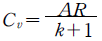
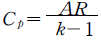
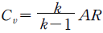
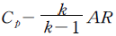
(정답률: 46%)
22. 그림과 같은 디젤 사이클의 P-V 선도에서 분사 단절비(cut-off ratio)를 표시하는 식은?
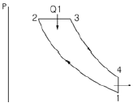
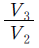
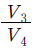
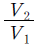
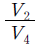
(정답률: 18%)
23. 디젤 사이클에서 열효율을 60% 로 하기 위해서 압축비를 약 얼마로 하면 좋은가? (단, 체절비 σ= 1.8. 비열비 k = 1.4 이다)
- 9.5
- 11.5
- 12.7
- 13.7
(정답률: 27%)
24. 기관의 제동마력을 Le (PS), 연료소비량을 B(kgf/h), 연료의 저위발열량을 Hu (kcal/kgf)라 하면 제동열효율 ηe 을 구하는 식은?(오류 신고가 접수된 문제입니다. 반드시 정답과 해설을 확인하시기 바랍니다.)
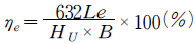
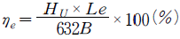
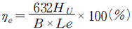
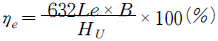
(정답률: 41%)
25. 일반적으로 디젤노크를 일으키는 원인이 아닌 것은?
- 연료 분사시기가 빠르다.
- 기관의 온도가 낮다.
- 냉각수 온도가 낮다.
- 연료에 공기가 혼입되었다.
(정답률: 29%)
26. 조기점화(pre-ignition)가 일어나는 직접적 원인은?
- 점화장치의 마모 때문이다.
- 너무 농후한 연료공급 때문이다.
- 누전에 의해 점화 플러그가 작동하기 때문이다.
- 정상 점화 이전에 표면 점화가 일어나기 때문이다.
(정답률: 19%)
27. 피스톤 링의 3대 작용이 아닌 것은?
- 기밀 작용
- 오일제거 작용
- 열전도 작용
- 윤활 작용
(정답률: 18%)
28. 내연기관은 고속에서 중속보다 회전력이 더 저하되는데 그 주된 이유는?
- 체적효율이 낮아지기 때문이다.
- 환기가 너무 잘 되기 때문이다.
- 혼합비가 너무 진하기 때문이다.
- 점화시기가 많이 진각 되기 때문이다.
(정답률: 33%)
29. 밸브 재료의 구비조건에 대한 설명으로 틀린 것은?
- 열전도가 양호할 것
- 작동온도에 쉽게 팽창할 것.
- 내식성이 클 것.
- 고온강도 및 경도가 높을 것.
(정답률: 31%)
30. 다음 중 내연기관용 윤활유의 기능이 아닌 것은?
- 기밀 작용
- 냉각 작용
- 청결 작용
- 응력 집중 작용
(정답률: 72%)
31. 기관의 연소실에서 발생하는 블로바이의 설명으로 가장 적합한 것은?
- 연소실 내에서 신기와 배기가 서로 공존하는 현상
- 신기가 연소실에 들어오는 양 만큼 배기가연소실에서 빠져나가는 현상
- 신기와 배기가 연소실 내에서 경계층을 이루고 있는 현상
- 연소실 가스가 피스톤과 실린더 사이로 빠져나가는 현상
(정답률: 32%)
32. 다음 중 소기효율(ηs)의 정의로 가장 적합한 것은?
- 소기 후 흡입한 신기량과 소기 전 잔류 가스량과의 비
- 소기 후 흡인한 신기량과 소기 후 실린더 내의 전체 가스량과의 비
- 소기 후 잔류 가스량과 실린더 내의 전 가스량과의 비
- 행정체적을 차지하는 소기 후 신기량과 잔류 가스량과의 비
(정답률: 43%)
33. 가스터빈의 특징 설명으로 틀린 것은?
- 토크 변동이나 진동이 적고 고속 회전이 가능하다.
- 연료 소비가 많다.
- 열효율이 피스톤 기관보다 낮다.
- 부품수가 많고 구조가 복잡하다.
(정답률: 25%)
34. 제동 열효율이 30%, 연료의 저위발열량이 44MJ/kg, 제동마력이 68kW 인 기관의 연료소비량은 몇 kg/h 인가?
- 11.36kg/h
- 14.29kg/h
- 16.95kg/h
- 18.55kg/h
(정답률: 0%)
35. 실린더 행정이 80mm, 내경이 80mm 인 엔진의 회전수가 2000rpm 일 때 이 엔진의 피스톤 평균속도는?
- 2.67m/s
- 5.33m/s
- 8.0m/s
- 9.33m/s
(정답률: 37%)
36. 디젤기관의 분배형 분사펌프에서 분사압력과 분사 지속시간에 영향을 미치는 것은?
- 캠 플레이트
- 하이드롤릭 헤드 어셈블리
- 딜리버리 밸브
- 압력조절 밸브
(정답률: 9%)
37. 다음 중 2행정 사이클 기관에 관한 설명으로 틀린 것은?
- 연료 소비율이 크다.
- 기관의 마력 당 중량이 크다.
- 실린더 벽이 과열되기 쉽다.
- 밸브가 없거나 있어도 그 기구가 간단하다.
(정답률: 37%)
38. 디젤 엔진의 예연소실식 연소실의 장점을 설명한 것으로 틀린 것은?
- 사용연료의 변화에 민감하지 않는다.
- 연료의 분사압력이 낮아도 되므로 연료장치의 고장이 적고 수명도 길다,
- 운전상태가 정숙하고 디젤 노크가 적다.
- 연소실의 표면적 대 체적비가 적기 때문에 냉각손실이 적다.
(정답률: 24%)
39. 공랭식에 비해 수냉식 냉각장치의 특징으로 맞는 것은?
- 냉각작용이 균일하다.
- 기관의 무게가 가볍다.
- 고장 가능성이 작다.
- 기관이 과열될 위험이 많다.
(정답률: 30%)
40. 동적균형(dynamic balancing)이 이루어진 기관에서 크랭크축의 비틀림 진동이 생기는 원인으로 적합한 것은?
- 원심력의 불균형 때문에
- 실린더 내의 폭발압력으로 인한 충격하중이 전달되어
- 흡기 밸브가 너무 일찍 열려서
- 피스톤 링의 마모로
(정답률: 21%)
3과목: 유압기기 및 건설기계안전관리
41. 가스 오일식 축압기(accumulator)에 사용되는 가장 적합한 가스는?
- 질소 가스
- 탄산 가스
- 산소 가스
- 아세틸렌 가스
(정답률: 13%)
42. 다음 중 유압장치의 특징을 설명한 것으로 틀린 것은?
- 힘의 증폭이 용이하다.
- 무단변속이 불가능하다.
- 일정한 힘과 토크를 낼 수 있다.
- 제어가 비교적 간단하고 정확하다.
(정답률: 14%)
43. 유압구동 기계의 관성 때문에 이상 압력이 생기거나 이상 음이 발생되어 유압장치가 과열되는 것을 방지하기 위해 사용되는 회로는?
- 제동 회로
- 증압 회로
- 재생 회로
- 출력 회로
(정답률: 27%)
44. 그림에서 실린더 B 의 반지름은 실린더 A 의 반지름의 2 배이다. 힘 F1과 F2사이의 관계는?
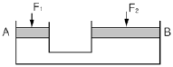
- F2 = 4F1
- F2 = 2F1
- F1= F2
- F1 = 4F2
(정답률: 25%)
45. KS 유압⋅공기압 도면 기호를 구성하는 기호 요소 중에서 실선의 용도는?(오류 신고가 접수된 문제입니다. 반드시 정답과 해설을 확인하시기 바랍니다.)
- 전기 신호선
- 파일럿 조작관로
- 필터
- 포위선
(정답률: 23%)
46. 유압 펌프의 송출 압력이 55kgf/cm2 이고, 송출유량이 30ℓ/min 인 경우 펌프의 동력은 약 몇 kW 인가?
- 2.10
- 2.70
- 2.90
- 3.70
(정답률: 10%)
47. 부하가 급격히 감소하더라도 피스톤이 급격히 하강하지 않도록 제어하는 회로로서 일정한 배압을 유지시켜 램이 중력에 의해 자유 낙하하는 것을 방지하는 보기와 같은 유압 회로의 명칭은?
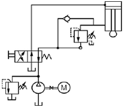
- 카운터 밸런스 회로(counter valance circuit)
- 재생 회로(regenerative circuit)
- 감속 회로(deceleration circuit)
- 브레이크 회로(brake circuit)
(정답률: 18%)
48. 다음 중 릴리프 밸브에서 압력 오버라이드의 설명으로 가장 적합한 것은?
- 전압력과 토출 압력의 차
- 크래킹 압력과 토출압력의 차
- 잔유량 압력과 크래킹 압력의 차
- 크래킹 압력과 서지 압력의 차
(정답률: 27%)
49. 유압 실린더에 작용하는 힘을 산출할 때 가장 관계있는 법칙은?
- 샤를의 법칙
- 파스칼의 법칙
- 가속도의 법칙
- 플레밍의 왼손법칙
(정답률: 24%)
50. 온도 변화에 따라 점도 변화의 비율을 나타내기 위하여 사용되는 수치는?
- 내화지수
- 점도효율
- 점도지수
- 점도변화율
(정답률: 27%)
51. 다음 중 배터리 전해액을 만드는 방법으로 틀린 것은?
- 황산에 증류수를 조금씩 넣으면서 서서히 혼합한다.
- 순수한 황산의 비중은 1.835∼1.87 정도로써 보통 증류수와의 혼합비율은 4(황산)：6(증류수) 정도이다.
- 전해액을 만들 때는 과열되지 않게 하고 내산성 용기를 사용하여 혼합한다.
- 계량 그릇은 비커를 사용하고 비중계로 비중을 측정한다.
(정답률: 54%)
52. 다음 아세틸렌 발생기에서 역류 역화의 원인에 해당되지 않는 것은?
- 가스 압력과 가스량이 부족할 때
- 팁이 과열되었을 때
- 토치의 팁에 석회가 끼었을 때
- 아세틸렌 공급이 과다할 때
(정답률: 22%)
53. 항타기를 사용하기 위하여 조립할 때 점검해야 할 사항 중 적당치 않은 것은?
- 기계의 연결부 풀림 또는 손상 유무
- 버킷, 디퍼의 손상 유무
- 권상기의 설치상태 이상 유무
- 버팀의 설치, 방법, 고정상태의 이상 유무
(정답률: 20%)
54. 보호구의 구비조건으로 맞지 않는 것은?
- 전도성이 좋아야 한다.
- 착용이 간편해야 한다.
- 작업에 방해가 되지 않아야 한다.
- 공업규격 또는 공인기관의 검정을 필한 제품이 좋다.
(정답률: 9%)
55. 드릴작업 중 가공물이 드릴과 함께 회전하기 쉬운 때는?
- 처음과 끝
- 처음과 구멍을 뚫기 시작할 때
- 중간쯤 뚫었을 때
- 구멍의 끝까지 거의 다 뚫었을 때
(정답률: 36%)
56. 다음 설명 중 틀린 것은?
- 유압 브레이크 내에는 잔압이 있어야 한다.
- 마스터 실린더 부품의 세척은 경유로 한다.
- 베이퍼록이 발생하면 브레이크 작동이 잘 안된다.
- 자재이음은 추진축의 각도변화를 가능하게 한다.
(정답률: 35%)
57. 다음은 연삭기 설치시 주의할 사항에 대하여 설명하였다. 맞는 것은?
- 작업대는 숫돌의 중심보다 약간 낮은 것이 좋다.
- 작업대는 숫돌의 중심보다 약간 높은 것이 좋다.
- 작업대는 숫돌의 중심과 같은 위치에 설치하는 것이 좋다.
- 작업대와 숫돌중심의 높이는 아무런 관계가 없다.
(정답률: 45%)
58. 일반 수공구를 사용하여 작업을 할 때 안전 및 주의사항으로 적합하지 않은 것은?
- 스패너를 사용할 때는 볼트나 너트의 크기에 알맞은 스패너를 선택하여 바르게 사용한다.
- 작업을 쉽게 한다는 생각으로 스패너에 다른 스패너 또는 쇠 파이프를 연결하여 사용해서는 안된다.
- 스패너 렌치류를 사용하여 너트를 풀 때는 몸 반대측으로 밀어서 풀어야 한다.
- 조정 렌치를 사용할 때는 조정 조(jaw)에 잡아당기는 힘이 가해져서는 안된다.
(정답률: 37%)
59. 정비공장의 정리 정돈시에 안전수칙으로 틀린 것은?
- 사용이 끝난 공구는 다음 작업의 편리성을 위해 모든 공구를 함께 모아둘 것.
- 잭 사용시에는 반드시 안전 스탠드 등으로 견고히 이중 안전장치를 할 것.
- 소화기 부근에 장비를 세워두지 말 것.
- 바닥에 물을 뿌리지 말 것.
(정답률: 20%)
60. 유압유 속에 공기가 혼입되면 유압장치의 작동이 원활히 될 수 없는데 이때 문제점이 아닌 것은?
- 숨돌리기 현상
- 캐비테이션 현상
- 산화 안정성 현상
- 유압유 열화 촉진현상
(정답률: 56%)
4과목: 일반기계공학
61. 2개의 너트를 사용하여 충분히 죈 다음 2개의 스패너를 사용하여 바깥쪽 너트를 고정한 후 안쪽의 너트를 다른 스패너로 풀리는 방향으로 돌려조여 너트의 풀림을 방지하는 것은?
- 자동 죔 너트에 의한 방법
- 로크 너트에 의한 방법
- 멈춤 나사에 의한 방법
- 톱니붙이 와셔에 의한 방법
(정답률: 69%)
62. 피치원 지름이 500mm, 잇수가 100개인 표준 평기어의 모듈은 얼마인가?
- m = 2.5
- m = 3
- m = 4
- m = 5
(정답률: 40%)
63. 50℃의 물을 30m 높은 곳으로 양수하자면 펌프의 전 양정을 몇 m 로 하면 되는가? (단, 흡수면에는 대기압이 작용하고 송수면 출구에서는 39.2N/cm2 의 압력이 작용한다. 전 손실수두는 6m이며, 흡입관과 송출관의 지름은 같고, 50℃ 물의 비중량은 γ = 9800 N/cm3 이다)
- 36
- 40
- 76
- 84
(정답률: 20%)
64. 한 변의 길이가 8cm 인 정 4각 단면의 봉에 온도를 20℃ 상승시켜도 길이가 늘어나지 않도록 하는데 28000 N 이 필요하다면 이 봉의 선팽창 계수는? (단, 탄성계수는 E = 2.1 × 10 6 N/cm2 이다)
- 1.14 × 10 -5
- 1.04 × 10 -5
- 1.14 × 10 -6
- 1.04 × 10 -4
(정답률: 12%)
65. 중앙에 집중하중 P 를 받는 길이 ℓ의 단순보에 대한 설명 중 틀린 것은? (단, 보의 자중은 무시하고 굽힘 강성은 EI 로 한다)
- 보의 최대 처짐은 중앙에서 일어난다.
- 보의 양 끝단에서의 굽힘 모멘트는 0(zero)이다.
- 보의 최대 처짐을 나타내는 값은
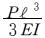
이다. - 보의 한 지점에서의 반력은 P/2 이다.
(정답률: 34%)
66. 70m 의 물속의 수압은 수은주의 높이로 약 몇 m인가? (단, 물의 비중은 1, 수온의 비중은 13.6 이다)
- 0.68
- 36.4
- 3.68
- 5.15
(정답률: 25%)
67. 서브머지드 아크용접의 특징 설명으로 틀린 것은?
- 용접 홈의 가공 정밀도가 좋아야 한다.
- 일정 조건하에서 용접이 시공되므로 강도가 크고 신뢰도가 높다.
- 열에너지의 손실이 적고 용접속도가 수동용접과 비교하여 10배 정도 이상이다.
- 비드가 불규칙할 경우와 하향용접 이외의 경우에도 매우 적합한 자동용접이다.
(정답률: 37%)
68. 폭이 5cm, 높이가 10cm 의 단면을 갖는 보에 굽힘 모멘트 10000kgf⋅cm 가 작용할 때 보에 생기는 최대 굽힘응력 σmax 은 약 몇 kgf/cm2 인가?
- 120
- 240
- 340
- 480
(정답률: 32%)
69. 선반을 이용하여 300rpm 으로 지름이 45cm 인 환봉을 절삭하려 한다. 이 때 절삭속도는 약 몇 m/min 인가?
- 254
- 25.4
- 424
- 42.4
(정답률: 29%)
70. 구리의 일반적인 성질 설명으로 틀린 것은?
- 용융점 이외는 변태점이 없다.
- 전기 및 열전도도가 높다.
- 연하고 전연성이 커서 가공하기 어렵다.
- 철강 재료에 비하여 내식성이 커서 공기 중에서는 거의 부식되지 않는다.
(정답률: 35%)
71. 드릴이 용이하게 재료를 파고 들어갈 수 있도록 드릴의 절삭 닐에 주어진 각의 명칭은?
- 날 여유각
- 보링각
- 평면 가공각
- 홈 절삭각
(정답률: 52%)
72. 일반적인 표면 경화법의 종류가 아닌 것은?
- 노멀라이징
- 청화법
- 고체 침탄법
- 질화법
(정답률: 24%)
73. 소성 가공의 종류가 아닌 것은?
- 인발 가공
- 압축 가공
- 전단 가공
- 밀링 가공
(정답률: 20%)
74. 합성수지의 일반적인 성형가공 방법이 아닌 것은?
- 압축 성형
- 사출 성형
- 단조 성형
- 주조 성형
(정답률: 12%)
75. 윤활유의 사용 목적이 아닌 것은?
- 밀폐 작용
- 밀봉 작용
- 청정 작용
- 보온 작용
(정답률: 19%)
76. 한 축에서 다른 축으로 운전 중 단속을 할 필요가 있는 경우 사용되는 축 이음은?
- 유니버설 조인트
- 올덤 커플링
- 물림 클러치
- 플렉시블 커플링
(정답률: 32%)
77. 동일한 동력을 전달하는 평 벨트 전동과 비교한 V 벨트 전동의 특징이 아닌 것은?
- 미끄럼이 적고 속도비가 크다.
- 벨트 이음부 없이 운전이 가능하여 정숙하다.
- V 홈이 있어 벨트가 벗겨질 염려가 없다
- 장력이 크므로 베어링에 걸리는 부하가 크다.
(정답률: 50%)
78. 주철의 결점인 여리고 약한 인성을 개선하기 위하여 먼저 백주철을 만들고 이것을 장시간 열처리하여 탄소상태를 분해 또는 소실시켜 인성 또는 연성을 증가시킨 주철은?
- 회주철
- 칠드 주철
- 합금 주철
- 가단 주철
(정답률: 50%)
79. 좌 2줄 M50×2-6H 로 표시된 나사의 호칭 설명으로 올바른 것은?
- 오른나사. 2줄
- 미터 보통나사. 수나사
- 호칭지름 50mm. 피치 2mm
- 바깥 지름 25mm. 공차 등급 6급
(정답률: 84%)
80. 스프링 상수가 5kgf/cm 인 코일 스프링에 30kgf의 하중을 작용시키면 처짐은 몇 mm 인가?
- 10
- 30
- 60
- 90
(정답률: 24%)